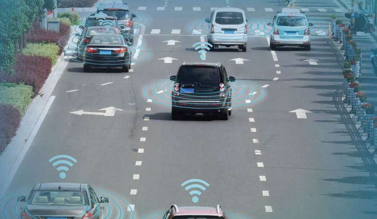
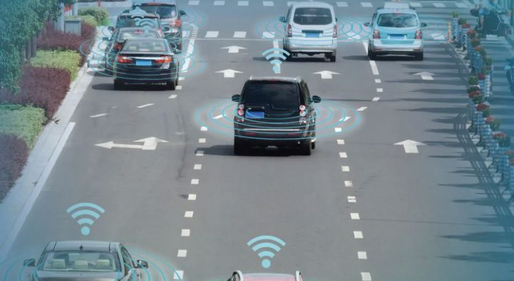
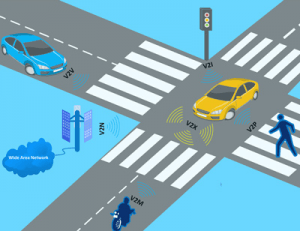
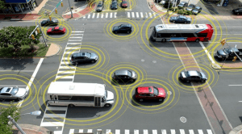

V2X Market Sees Explosive Growth

According to MarketsandMarkets analysis, the V2X Market is projected to grow at a CAGR of 17.61% from 2017 to 2025, to reach $99.55 billion by 2025.
High energy savings and improvements in location accuracy and positioning are some of the advantages of V2X technology.Additionally, factors such as rising demand for real-time traffic and incident alerts for increasing public safety, increase in government funds for better traffic management, and the development of connected vehicles are driving the growth of the V2X market.
Several countries across the world such as the US, Germany, UK, and China are adopting the V2X technology for improved safety, operational performance, and environmental benefits.However, the implementation of V2X technology requires substantial funding from the government.In 2016, the US Department of Transportation’s (DOT) National Highway Traffic Safety Administration (NHTSA) announced that it would take steps to enable vehicle-to-vehicle communication for light vehicles that would help improve safety.
With the launch of the 'Made in China 2025' strategy by the Ministry of Industry and Information Technology of China, intelligent and connected vehicles have become the key focus areas of the country’s automotive industry.Likewise, the Federal Government of Germany presented its 'Strategy for Automated and Connected Driving,' a far-reaching reform of the existing regulations to facilitate autonomous cars.These developments are further anticipated to boost the growth of the V2X market.
Download PDF Brochure
North America is estimated to lead the V2X market, by value, in 2017.It is followed by Europe, Asia Pacific, and the Rest of the World (RoW).The largest share of North America in the automotive V2X market can be attributed to factors such as a huge demand for automobiles because of better infrastructure and high income, favorable policies and regulations by the government, and need for a better and effective transportation system.
[cpm10]
The European region is estimated to be the second-largest V2X market for automotive during the forecast period.The increasing concerns about the safety of travelers and vehicles on the road have led to the adoption of V2X technology by the European Transport Safety Council (ETSC).The increasing demand for V2X systems with telematics applications is expected to drive the market in this region.
VEHICLE-TO-VEHICLE COMMUNICATION: HIGHEST growth in the V2X market
Vehicle-to-Vehicle (V2V) communication is the wireless exchange of data among vehicles traveling in the same vicinity, which offers opportunities for significant safety improvements.The V2V connectivity is most suited for short-range vehicular networks.Emergency brake light warning, forward collision warning, intersection movement assist, blind spot and lane change warning, do-not-pass warning, and control loss warning are some of the common functions of V2V communication.
Government initiatives to commercialize V2V communication are expected to drive the V2V market in North America.In 2014, the National Highway Traffic Safety Administration (NHTSA) of the US DOT introduced steps to enable V2V communication for light vehicles, which would help improve safety.In 2015, the DOT announced that New York City, Wyoming, and Tampa would receive up to $42 million funding to pilot the next-generation V2V and V2I communication technologies.
Request for Sample Pages
[bsa_pro_ad_space id=4]
Share on Facebook Tweet Follow us
Two more of the world’s biggest soccer leagues kick off their seasons this weekend.Bayern Munich (2-11) will look to extend their period of unparalleled dominance of the German Bundesliga, as they take on Hertha Berlin (20-1) on Friday.That same day, FC Barcelona (14-19) begin their quest for a three-peat in La Liga, away to Athletic Bilbao (4-1).Both Bayern (1-3) and Barca (4-6) are heavily favored to win their respective leagues.Both will seemingly have their sights set on the Champions League.
The story of last season was the surprisingly competitive title race between Bayern Munich and arch-rival Borussia Dortmund.A slow start by Bayern allowed Die Schwarzgelben to open up a considerable early lead.However, trailing by six points at winter break, a furious run of form allowed Die Roten to close the gap, and eventually win their seventh consecutive Champions Shield by just two points.Club legends Arjen Robben and Franck Ribery are gone, but the rich have already gotten richer.On defense, Bayern added a pair of World Cup champions, Lucas Hernandez and Benjamin Pavard.Croatian national Ivan Perisic is also here, on loan from Inter Milan.
Even with the loss of American Christian Pulisic to Chelsea, Dortmund (4-1) are a near lock for second place.The $120 million they spent in the transfer market this offseason could add up to another strong challenge to their Klassiker rivals.RB Leipzig (33-1) also stand an outside chance of making a title run, and spent handsomely to do it as well.However, as in the case of the Premier League, the real race this year appears to be for the fourth and final spot in the Champions League.Bayer Leverkusen rounded out the top four last year, and remain favorites (5-4) to do it again.Die Werkself’s run paralleled that of the Bundesliga champions— bottom of the league after three matches, but headed to Europe nonetheless, after spending one day all season in the top four.Borussia Monchengladbach (9-4) and Hoffenheim (2-1) are also contenders for fourth.
Meanwhile, in Spain, FC Barcelona are enjoying their own unprecedented run of titles: four in five years, eight in eleven, and ten of the last fifteen.Barca won La Liga last year by eleven points, over Atletico Madrid, nearly matching their own record fifteen-point margin, set in 2013.Offseason moves imply Blaugrana have their sights set on bigger and better things than their domestic league.They snatched Antoine Griezmann, from rival Atletico Madrid, for $135 million.They still employ, arguably, the greatest player in the world— a guy named Messi— and they could still win back Brazilian Neymar from Paris Saint-Germain.With few discernible weaknesses, it would take a perfect storm for Madrid— either Madrid— to catch Blaugrana
.
Real Madrid (12-5) bulked up to win now, taking Belgian Eden Hazard off Chelsea’s hands, for $114 million.They still have superstars Sergio Ramos, Luka Modric, and Karim Benzema, but it might not be enough.Atleti (18-1), by contrast, appear to be rebuilding this season.Cap space isn’t a thing in Europe, but fiscal responsibility is.Atletico recovered some $211 million in transfer fees, from Griezmann and dealing Rodri to Manchester City.A young core (and Diego Costa) should be more than enough to get back to Europe.Speaking of which, that all-important fourth slot could come down to the wire too.Valencia (11-8), who also clinched fourth on the final day, are favored to again.Otherwise, Sevilla (5-2), who also spent big this offseason, could make the Champions League.
[bsa_pro_ad_space id=4]
Share on Facebook Tweet Follow us
Posted On: 2019-08-15T00:00:00
Posted By: Aaron Smith






Content Date: 2019-08-15
Download Date: 2021-07-09
Document ID: L0C04EF7G